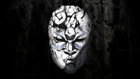
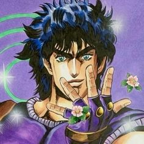
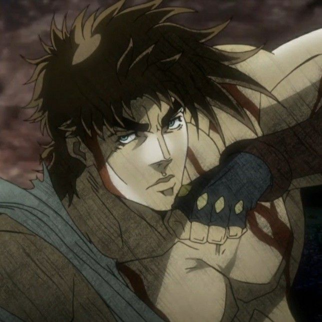
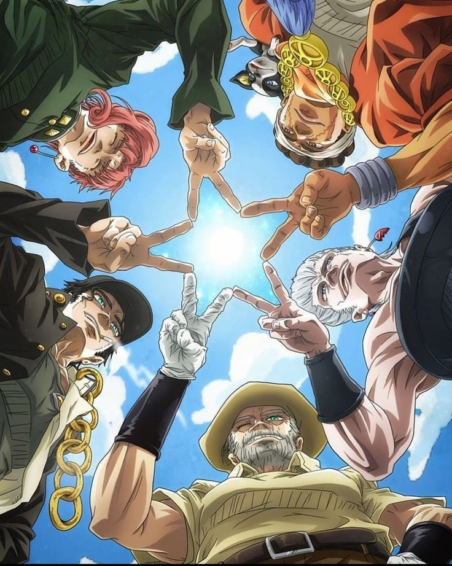
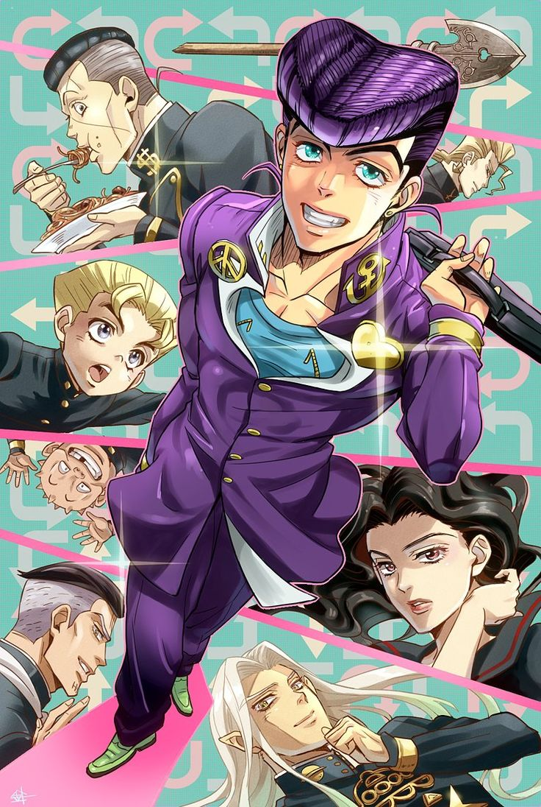
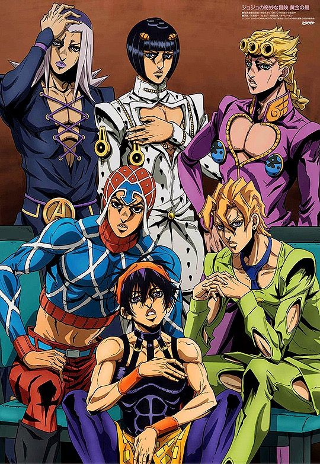
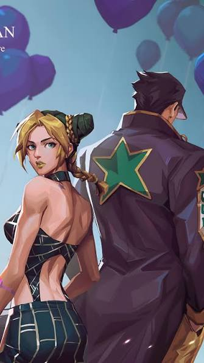
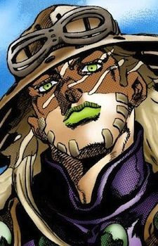

Século XIX na Inglaterra. Jonathan Joestar enfrenta seu irmão adotivo, Dio Brando, que se transformou em um vampiro usando uma máscara de pedra asteca.
Protagonista: Jonathan Joestar
Poder principal: Hamon (Energia vital)

Década de 1930. Joseph Joestar, neto de Jonathan, viaja pelo mundo para derrotar os Homens do Pilar, os criadores imortais da máscara de pedra.
Protagonista: Joseph Joestar
Poder principal: Hamon (Energia vital)

Década de 1980. Jotaro Kujo viaja até o Egito com seu avô Joseph para derrotar Dio, que retornou e despertou uma maldição na família.
Protagonista: Jotaro Kujo
Poder principal: Stand

Anos 90 no Japão. Na pacata cidade de Morioh, Josuke Higashikata e seus amigos usam seus Stands para caçar um assassino em série que se esconde na região.
Protagonista: Josuke Higashikata
Poder principal: Stand

Anos 2000 na Itália. Giorno Giovanna, filho de Dio, entra para a máfia Passione com o objetivo de subir ao topo e transformá-la em uma organização justa.
Protagonista: Giorno Giovanna
Poder principal: Stand

Anos 2011 nos EUA. Jolyne Cujoh, filha de Jotaro, é injustamente presa na Flórida e precisa desvendar uma conspiração liderada por um seguidor de Dio.
Protagonista: Jolyne Cujoh
Poder principal: Stand

Fim do século XIX nos EUA. Em um universo alternativo, Johnny Joestar entra em uma corrida de cavalos transcontinental para descobrir o mistério de partes sagradas.
Protagonista: Johnny Joestar
Poder principal: Stand/ Spin